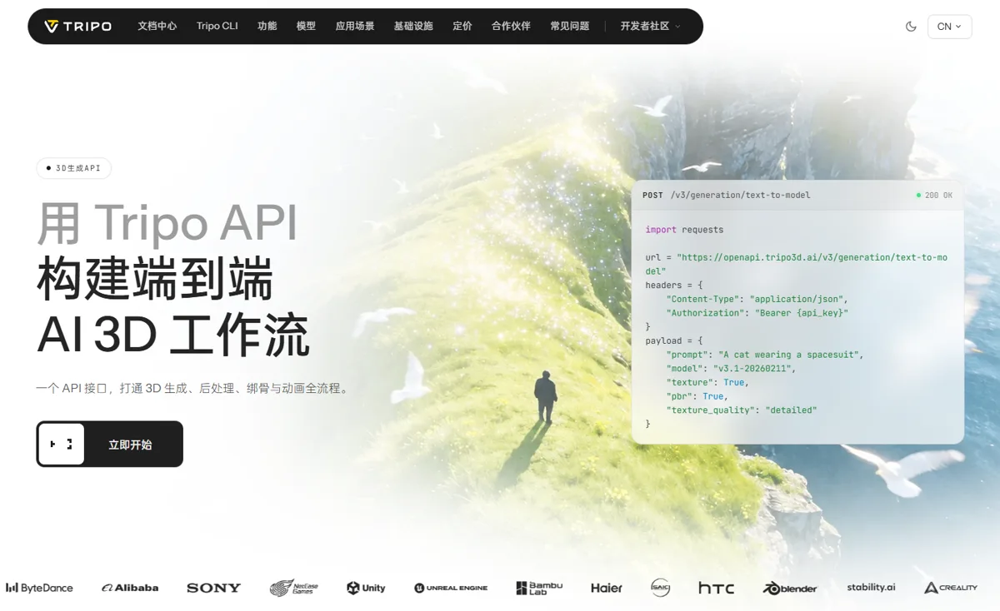
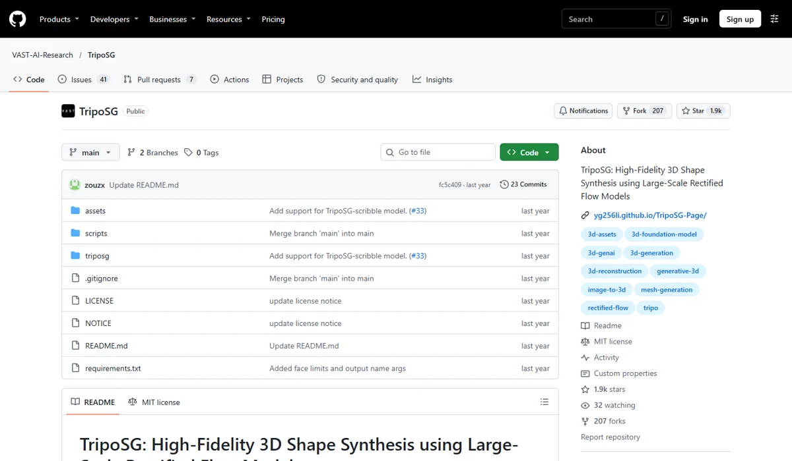

VAST TripoVAST（光影焕像） · Tripo AI
VAST 是 2026 年融资最猛的 AI 3D 公司：半年四轮、公开金额合计约 8.5 亿美元，估值超过 10 亿美元，Tripo 用户约 2,000 万、以美国用户为主。它最重要的进展是 P2.0 原生生成四边形拓扑网格，并把“生成 → 重拓扑 → 贴图 → 绑骨 → 动画 → 导入 DCC 软件”做成一条完整的 API 流程，直接回应了 3D 生成“好看但不能用”的老问题。
一页结论
- 资本最集中的 3D 公司：3 月 5,000 万美元 A 轮（阿里巴巴领投）、6 月近 2 亿美元、9 月约 30 亿元人民币 B / B+ 轮（MPCi 领投），完美世界、蓝色光标、37 互娱、4399 等游戏与营销公司战略投资S1S2S3
- 解决“能不能用”的问题：P2.0（9 月 21 日正式发布）同时支持四边形与三角形网格，自动拆分角色、服装、配饰，提供局部重生成（Mesh Edit）S5S6
- 全流程 API：一个接口覆盖 3D 生成、重拓扑、贴图、格式转换、自动绑骨、动画重定向；提供 Tripo CLI 和 DCC 软件桥接S4S7
- 全球化、以游戏为主：用户多数在美国，其次是欧洲、日韩；网易《燕云十六声》用 Tripo 让玩家把照片变成 3D 形象S3
- 开源积累社区：TripoSR（与 Stability AI 合作）7,293 star、UniRig 2,048 star、TripoSG 1,884 starS8
01公司介绍
| 项目 | 内容 |
|---|---|
| 公司 | VAST（光影焕像），2023 年创立；创始人 Simon Song 曾是 MiniMax 创始成员S3 |
| 官网 | tripo3d.ai；开发者平台 developers.tripo3d.ai |
| 总部 | 北京 |
| 融资 | 2026 年 3 月 A 轮 5,000 万美元（阿里巴巴、恒旭资本领投）；6 月近 2 亿美元（Ince Capital、国寿长三角基金领投）；7 月 1.5 亿美元（吉利资本、4399、贪玩、巨人网络、复星参投）；9 月 B / B+ 轮约 30 亿元人民币（MPCi 领投）S1S2S3 |
| 估值 | 公司确认超过 10 亿美元，未披露具体数字S3 |
| 盈利预期 | 创始人预计两年内可以盈利S3 |
02公司战略
VAST 的主线是“生产级 3D 资产 + 全流程工具 + 全球创作者”：先解决 AI 3D 资产进不了专业流程的问题，再把从生成到动画的每一步都做成工具和 API。
03定位与竞争
一句话定位：为游戏工作室、独立开发者、3D 打印和数字内容团队，在 3D 资产生产中，提供从生成到绑骨动画、能直接进入专业流程的 AI 3D 工具与 API。
| 目标用户 | 主要入口 | 依据 |
|---|---|---|
| 个人创作者 | Tripo Studio（网页） | 约 2,000 万用户，免费账号每月 200 积分（约 13 个模型，仅限个人使用）S3S6 |
| 游戏工作室 | Tripo Studio、API | 约 9 万家工作室和企业客户（媒体报道）；网易游戏为公开案例S3S9 |
| 开发者与企业 | Tripo API、CLI | 按积分计费，1 积分 = 0.01 美元S4 |
| 3D 打印与硬件 | API、模板 | 开发者平台展示拓竹、创想三维等合作方；Studio 提供“3D 打印就绪”模板S7S10 |
04产品与模型矩阵
| 类别 | 模型 / 产品 | 定位 | 状态（2026-11） |
|---|---|---|---|
| 3D 模型 | Tripo P2.0 | 原生四边形（最多 2.5 万面）与三角形（最多 5 万面）网格；自动拆分部件；多版本生成；Mesh Edit；生成约 10–40 秒 | 8 月预览，9 月 21 日正式发布S2S5S6 |
| 3D 模型 | Smart Mesh P1.0 | 上一代低多边形、可直接用于游戏的模型 | 2026 年 3 月发布S9 |
| 3D 模型 | v3.1 系列（API） | API 示例中的通用 3D 生成模型，支持 PBR 贴图 | 可用S10 |
| 工具 | Tripo Studio | 网页工作台：图像生成与编辑、多视角、批量转 3D、智能拓扑、绑骨、动画、DCC 桥接 | 可用S7 |
| 开发者 | Tripo API、Tripo CLI | 3D 生成、后处理、绑骨与动画全流程接口 | 可用S4S10 |
| 开源 | TripoSR、TripoSG、TripoSF、UniRig | 单图重建、形状生成、稀疏表示、自动绑骨 | GitHub 开源S8 |
| 世界模型 | Project Eden | 生成可探索的 3D 环境 | 研发中S3 |
- 开源 TripoSR单图快速重建 3D，现有 7,293 starS8
- 开源 TripoSG大规模整流流形状生成S8
- 融资近 2 亿美元，成为独角兽约 2,000 万用户S3
- Studio 接入 GPT Image 2.5先做对参考图再转 3DS7
用户入口
Tripo Studio（网页）Tripo API / CLIDCC 桥接（Blender、Unity 等）
前置：参考图
图像生成与编辑（接入 GPT Image 2.5）多视角生成抠图与批量
3D 生成
P2.0 四边形 / 三角形网格部件拆分Mesh Edit 局部重生成
后处理与动画
重拓扑、贴图、格式转换自动绑骨、动画重定向
授权免费：仅个人使用付费：可商用


05生成能力与可控性
Tripo 的优势不在单张“好看”，而在资产能否直接进入专业流程：拓扑、部件拆分、绑骨和格式。
| 能力 | Tripo P2.0 / Studio |
|---|---|
| 网格类型 | 四边形（最多 2.5 万面）与三角形（最多 5 万面，P1.0 为 2 万）S5S6 |
| 输入 | 单张图片、文字，或最多 4 张多视角图（前、左、右、后，仅订阅用户）S5 |
| 部件拆分 | 自动把角色、服装、配饰拆成独立部件S6 |
| 局部修改 | Mesh Edit 只重生成模型的一部分S6 |
| 多版本 | 同一积分生成 4 个不同面数的版本S6 |
| 速度 | 约 10–40 秒，取决于面数S5 |
| 后处理 | 重拓扑、贴图、分割补全、自动绑骨、动画重定向S4 |
| 生产就绪程度 | 公司称“几秒内生成可用于生产的 3D 物体”，行业媒体未独立验证；Tripo 团队在 80.lv 受访时也承认，关节形变、面部表情和次级动作仍需手工调整S5S11 |
第三方评测怎么说
| 评测方 | 时间 | 对比对象 | 结论 |
|---|---|---|---|
| CG Channel | 2026-09-28 | P2.0 正式版 | 列出四边形输出、部件拆分、多版本与 Mesh Edit，认为目前主要面向游戏和实时应用资产；未评价输出质量S6 |
| 3D Printing Industry（Paloma Duran） | 2026-09 | P2.0 预览版 | 报道公司称可“几秒内生成可用于生产的 3D 物体”，文章未独立验证S5 |
| Hugging Face 3D Arena | 数据截至 2025-05 | 图生 3D 盲测 | Tripo 作为专有系统未进入当时的榜单S12 |
尚未找到对 P2.0 四边形布线、形变和重拓扑质量的独立美术测试；3D 工具厂商自办的排行榜未采用。
评测共识：行业媒体认可 Tripo 在工作流和拓扑上的方向，但“可用于生产”的说法仍主要来自公司，缺少独立的美术测试数据。
06解决方案与场景
07商业模式与价格
订阅（个人与工作室）+ 按积分计费的 API；免费账号只能个人使用，商用需要付费。
| API 类别 | 起步价 | 积分范围 |
|---|---|---|
| 3D 生成 | $0.10 / 模型 | 文生 3D 10–20；图生 3D 20–30；多视角生 3D 20–30 |
| 模型处理 | $0.05 / 次 | 贴图 10–30；格式转换 5–10；重拓扑 10–40；分割补全 30–50 |
| 动画 | $0.10 / 次 | 绑骨检查免费；自动绑骨 25；动画重定向 10 |
| 图像生成 | $0.05 / 张 | 文生图 5；图像转多视角 10 |
Tripo 开发者平台官方价格，1 积分 = 0.01 美元，2026-11-05 访问。来源：S4
| 任务 | 组合 | 估算成本 |
|---|---|---|
| 一个带贴图的道具 | 图生 3D + 贴图 | 约 $0.30–0.60 |
| 一个可动画的角色 | 图生 3D + 重拓扑 + 贴图 + 自动绑骨 | 约 $0.65–1.25 |
| 个人免费额度 | 每月 200 积分 | 约 13 个模型，仅限个人使用 |
按官方积分区间换算；免费额度取 CG Channel 报道。来源：S4S6
| 订阅 | 价格 |
|---|---|
| 免费 | 每月 200 积分，模型仅限个人使用 |
| 付费（含商用授权） | 每年 240 美元起 |
| 彭博报道口径 | 每月 20 美元起，另按 token 消耗计费 |
08上下游与渠道
09用户、客户与收入
10用户口碑与容错设计
11版权与合规
12近期动态
13潜在风险分析意见
- 收入与估值差距：媒体报道年化收入约 1,200 万美元，与 7 亿美元级的融资规模相比仍很小
- 大厂开源冲击：腾讯混元 3D 等开源模型免费可部署，压缩付费空间
- 生产可用性未被独立证实：一旦专业美术的实际使用体验不及宣传，口碑可能反转
- 依赖上游模型：参考图环节接入 OpenAI 等外部模型，成本和供应受制于人
- 海外用户为主的合规风险：中国公司服务以美国为主的用户群，面临数据与地缘政策不确定性
14综合结论分析意见
关键动作拆解（三问法）
| 动作 | 为什么做（推断） | 效果如何 | 要不要学 |
|---|---|---|---|
| P2.0 原生四边形拓扑 | 专业流程要能编辑、绑骨、动画，三角面网格很难直接用 | 行业媒体广泛报道，独立美术测试缺失S5S6 | 高优借鉴把专业用户的“可用”标准做成产品目标 |
| 把全流程做成 API | 单点生成很容易被替代，全流程才有黏性 | 已覆盖生成到动画S4 | 高优借鉴 |
| 接入 GPT Image 2.5 做参考图 | 3D 质量取决于输入图，用最好的图像模型补短板 | 已上线（赞助文章）S7 | 借鉴上游用最好的模型，自己专注核心环节 |
| 游戏公司战略入股 | 绑定行业客户和真实需求 | 完美世界、37 互娱等入股S2 | 借鉴让行业客户成为股东 |
优势
- 拓扑与工作流
- 资本与全球用户
- 价格低、免费额度友好
劣势
- 收入规模小
- 缺少独立质量评测
- 核心模型未开源
机会
- 游戏与实时内容
- 3D 打印与电商
- 3D 世界（Project Eden）
威胁
- 大厂开源 3D
- Meshy 等直接对手
- 地缘与数据合规
对本系列三个问题的回答
- 大厂会不会通吃？ 在 3D 上没有：Google、OpenAI 都没有 3D 资产产品，腾讯以开源为主；VAST 作为专业公司拿到了 2026 年最多的 3D 融资
- 钱从哪里来？ 个人与工作室订阅加 API；用户规模大但收入仍小（媒体报道年化约 1,200 万美元），资本是目前的主要支撑
- 3D 离商用还差什么？ Tripo 指出了路径：四边形拓扑、部件拆分、绑骨动画和 DCC 对接，这些正是专业流程的门槛；差的是独立验证“真的能直接用”，以及足够的付费规模
对 AI 产品团队的启示
高优借鉴
- 三维数字化产品评估 3D 生成时，把拓扑（四边形 / 三角形）、部件拆分、能否绑骨作为必测项，而不只看渲染效果
- 上游输入决定下游质量：先把参考图（多视角、T 型姿势）做好，再转 3D
- 一次生成多个面数版本，适配不同终端（手机、PC、3D 打印）
观望
- P2.0 在真实美术流程中的返工率
- Project Eden 等 3D 世界生成
不建议
- 用免费账号生成的模型直接商用
- 只凭厂商“可用于生产”的说法跳过美术验收
信息缺口
以下信息未找到可靠的公开来源，本报告不做推测。
- 经审计的收入与付费用户数（媒体口径不一）
- P2.0 四边形布线、形变与重拓扑质量的独立美术测试
- 最新的 3D 独立盲测排名（3D Arena 当前榜单未能读取）
- 各开源仓库的许可条款
- 订阅各档位的完整价格
来源
A 官方 · B 权威媒体或第三方 · C 社区（仅用于口碑与线索）。访问日期均为 2026-11-05。
- S1 · BMatrix Partners China has led a ~$446m Series B and B+ into VAST, maker of Tripo AI, in its fourth round of 2026InvestGame · 2026-09
- S2 · BTripo AI Lands 3 Billion Yuan, Unveils Quad-Topology Model3D Printing Industry · 2026-09
- S3 · BGen-Z gamer's 3D-model startup VAST becomes China's latest AI unicorn（转载彭博报道）Tripo 开发者博客（彭博） · 2026-06-01
- S4 · ATripo API 定价Tripo 开发者平台 · 2026-11-05 访问
- S5 · BTripo AI Lands 3 Billion Yuan, Unveils Quad-Topology Model（P2.0 预览参数）3D Printing Industry（Paloma Duran） · 2026-09
- S6 · BNew CG software you may have missed: 28 September 2026（Tripo P2.0）CG Channel · 2026-09-28
- S7 · ATripo integrates GPT-Image-2.5 Sunburst into its image-to-3D workflow（Tripo 赞助文章）CG Channel · 2026-10-16
- S8 · AVAST-AI-Research 开源仓库（TripoSR、TripoSG、TripoSF、UniRig）GitHub（GitHub API） · 2026-11-05 访问
- S9 · CTripo AI Hits 10M Users as Vast Raises $200M（含年化收入、P1.0 发布口径）AI Weekly · 2026
- S10 · ATripo 开发者平台首页（合作方标识、API 示例）Tripo · 2026-11-05 访问
- S11 · CHow Tripo P2.0 & Astra Work Together in Blender and Unity（Tripo 团队受访，公司口径）80.lv · 2026-10-23
- S12 · B3D Arena: An Open Platform for Generative 3D EvaluationDylan Ebert（Hugging Face），arXiv · 2025-06（数据截至 2025-05-30）